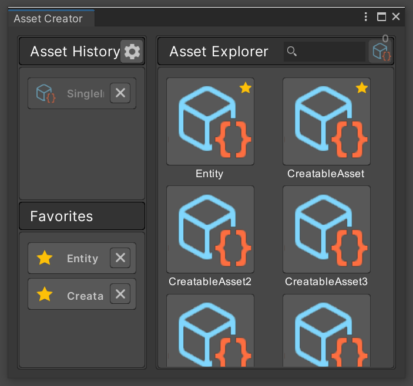
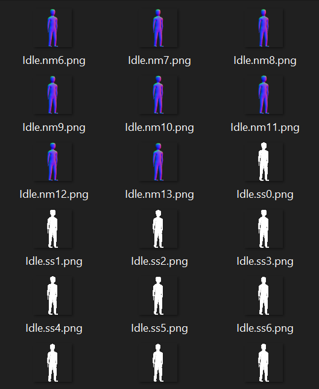
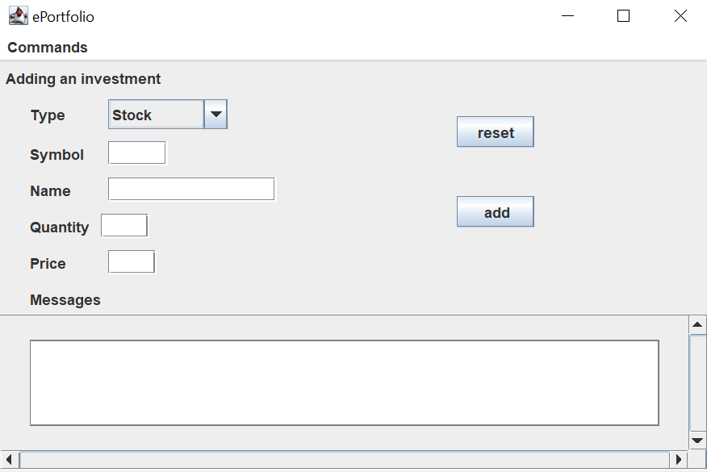

Hey, I'm Justin Erogun. I'm a 4th year Computer Science student at the University of Guelph, with a minor in Philosophy.
Like many others, I started my journey in software development through a passion for video games.
It didn't take me long to realize that I love solving challenging problems, creating beautiful user interfaces, participating in design discussions, and, of course, making games.
During my years of univeristy I've begun and completed three successful internships. I've been nominated for Co-op Student of the Year, won Hack the Northeast: Beyond, and have consistently been on the Dean's Honours List each semester.
When I'm not programming, you might find me playing basketball, watching shows, writing, or otherwise immersing myself in one among multiple fantasy worlds.
Executed multiple phases of a large-scale software redevelopment project.
Lead and initiated design discussions, and implemented changes as the primary developer.
Established conventions and delivered team-wide presentations.
I've been using Unity and C# to develop a single-player, 2D, RPG, side-scroller game.
I've implemented patterns such as finite-state machines, dependency injection, and behaviour trees.
I like to use Blender to create game models, and use LMMS for music creation.
I also created several additional tools, scripts, and interfaces to better facilitate the game development process.
I created Python scripts to automate batch exporting of Blender keyframes.
This tool supports creating base 2D spritesheets, normal maps, and emission maps.
Spritesheets are exported in batch by keyframe, using specified settings for different render engines.
This tool can be useful for creating base, normal, and emission maps all at once.
I created a GUI using Java Swing and Java AWT for displaying a user's stock portfolio.
I've implemented input/output and loading/saving to files.
This project applies OOP and polymorphism concepts using Java.
